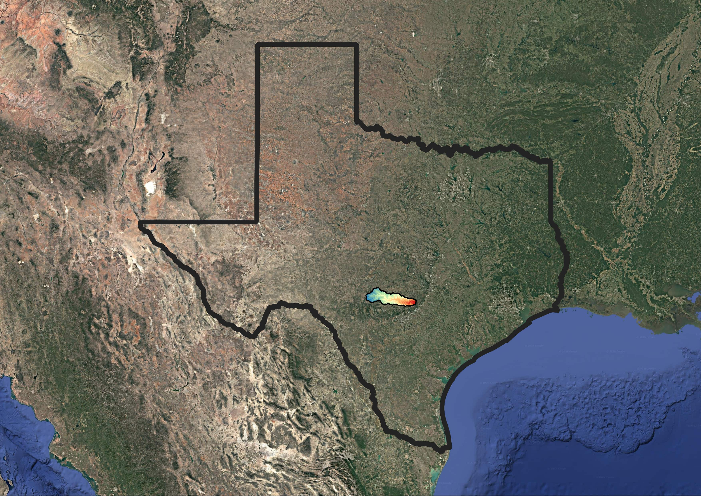
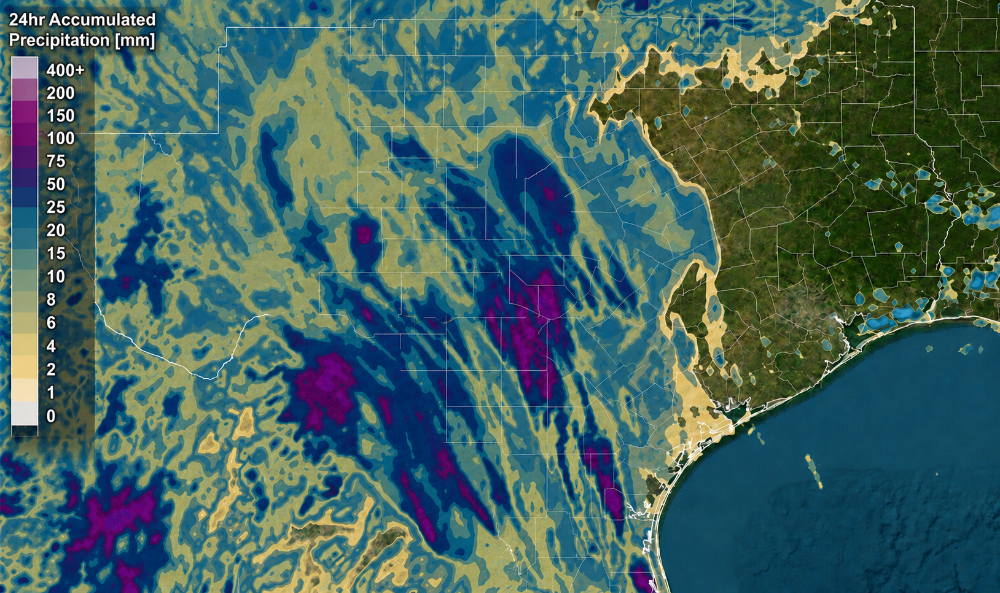
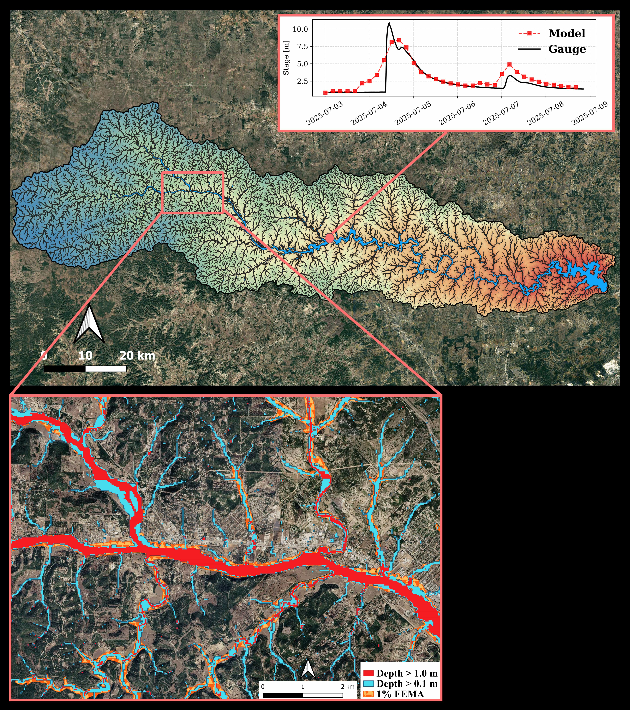
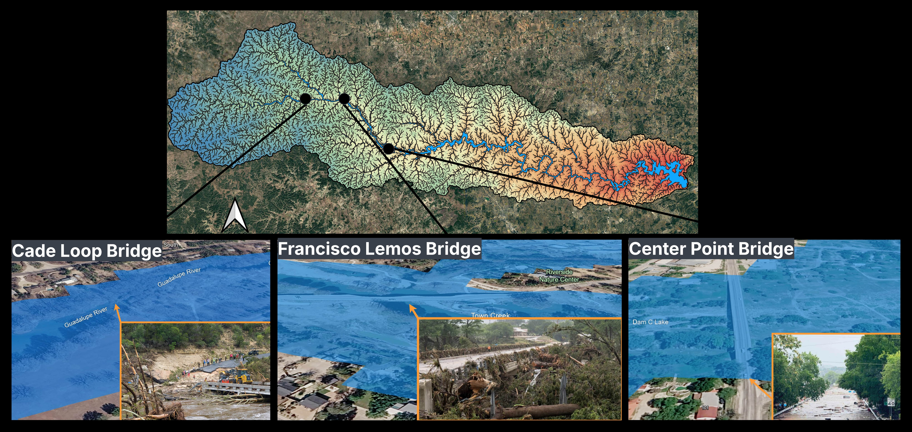

Building Community-Scale Flood Intelligence
Flooding continues to be one of the most damaging natural hazards worldwide, threatening communities, infrastructure, transportation networks, and local economies. In Central Texas, the Guadalupe River watershed has experienced numerous devastating floods driven by steep terrain, rapidly responding tributaries, and increasingly intense rainfall events.
RUCEEE Lab aims to develop practical flood intelligence products that directly support local communities throughout Kerr County and the Guadalupe River watershed. Our objective is to combine physics-based hydrodynamic modeling with high-resolution geospatial datasets to provide reliable flood hazard information for engineering design, emergency planning, and long-term community resilience.
Figure 1 shows the location of the Guadalupe River watershed within the State of Texas.

Our Vision
A high-resolution physics-based flood modeling framework is developed capable of simulating both pluvial flooding (caused by intense rainfall) and fluvial flooding (caused by river overflow). The framework is designed to generate flood hazard products across a wide range of rainfall scenarios, flood return periods, and future climate projections, providing information that can directly support communities, engineers, planners, emergency managers, and decision makers.
The framework is intended to provide to the Guadalupe watershed communities:
- High-resolution pluvial and fluvial flood inundation maps.
- Flood hazard maps for multiple rainfall return periods.
- Flood hazard maps for different river flood return periods.
- Future flood hazard assessments under projected climate change scenarios.
- Identification of vulnerable streets, roads, bridges, and critical transportation infrastructure.
- Identification of flood-prone residential, commercial, and public properties.
- Infrastructure exposure and vulnerability assessments.
- Decision-support products for emergency response and evacuation planning.
- Scientific information supporting resilient infrastructure design.
- Engineering products for floodplain management, insurance risk assessment, and long-term community planning.
Case Study: July 2025 Guadalupe River Flood
Devastating July 2025 Guadalupe River flood is modeled for validation. The event was triggered by exceptionally intense rainfall that generated rapid river rises, widespread inundation, and severe damage across the watershed. More than one hundred lives were lost, while numerous roads, bridges, and surrounding communities experienced catastrophic flooding.

Figure 3 shows flood inundation depths at different thresholds together with observed river-stage measurements from a USGS stream gauge. The comparison illustrates inundated regions extending beyond existing FEMA flood hazard maps, highlighting the value of high-resolution event-based hydrodynamic modeling for community-scale flood assessment.

Infrastructure Impact Assessment
Beyond predicting flood extent, the modeling framework enables assessment of impacts on critical infrastructure.
Figure 4 highlights several bridges affected during the July 2025 flood, illustrating how high-resolution flood simulations can identify vulnerable transportation assets and support infrastructure resilience studies. Similar analyses cover to roads, residential neighborhoods, public facilities, utilities, and other critical infrastructure throughout the watershed.

Looking Ahead
RUCEEE Lab is committed to advancing next-generation flood intelligence for communities throughout Central Texas. By integrating physics-based hydrodynamic models, high-resolution terrain data, geospatial analysis, and future climate projections, our goal is to deliver actionable flood hazard products that improve preparedness, reduce infrastructure vulnerability, and support resilient community development.